Crater / the deep arena Seed 101. Live browser captures from 20 September 2026.Open the live environment
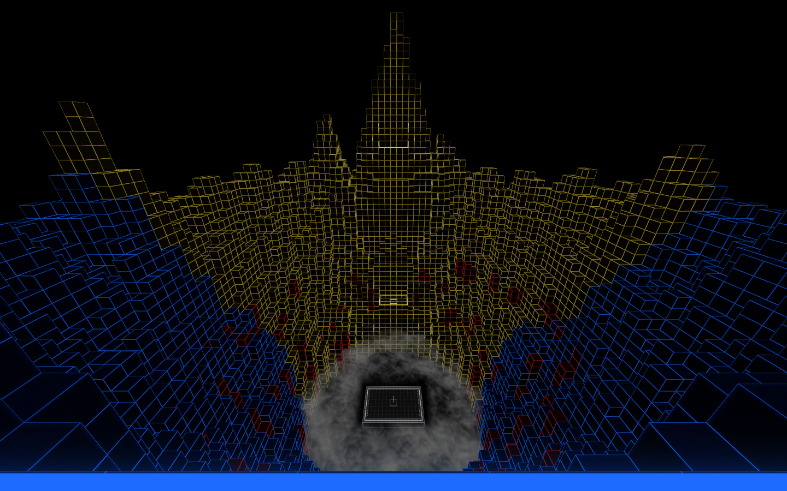
Blue cliff arrival · 32 m above court · Explore this view 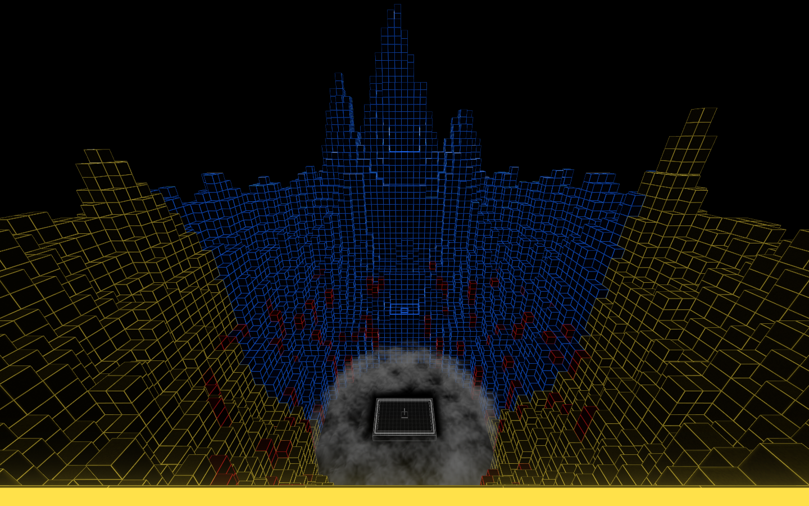
Yellow cliff arrival · 32 m above court · Explore this view 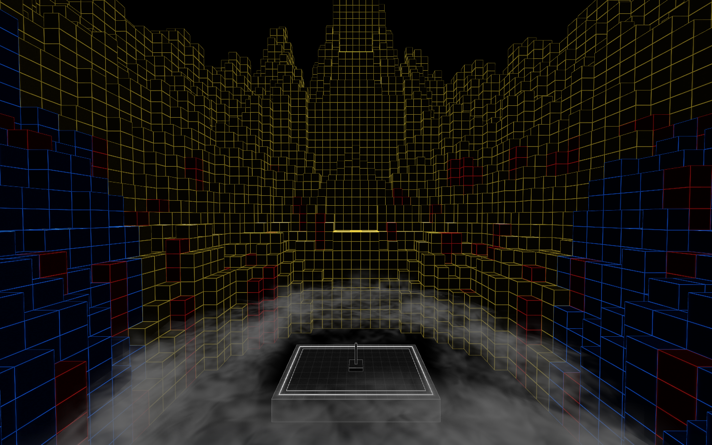
Blue play terrace · 7 m above court · Explore this view 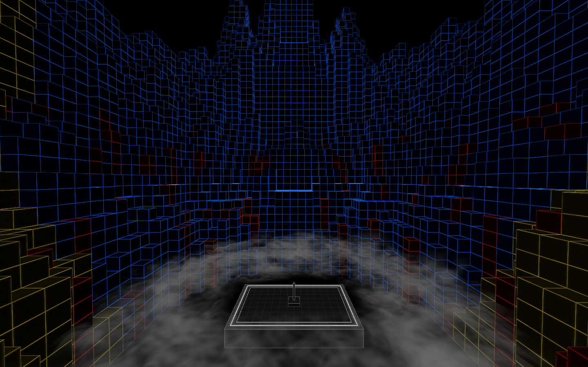
Yellow play terrace · 7 m above court · Explore this view 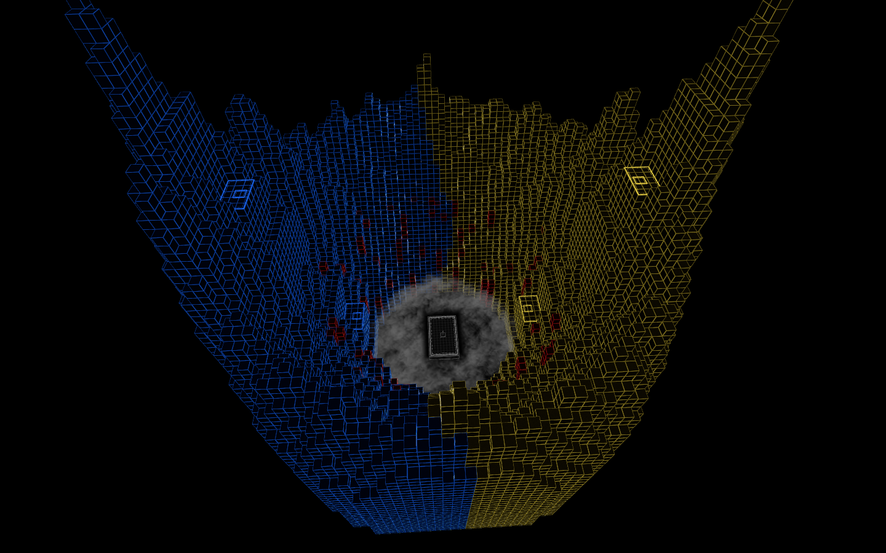
Wide · both sides and the deep court · Explore this view 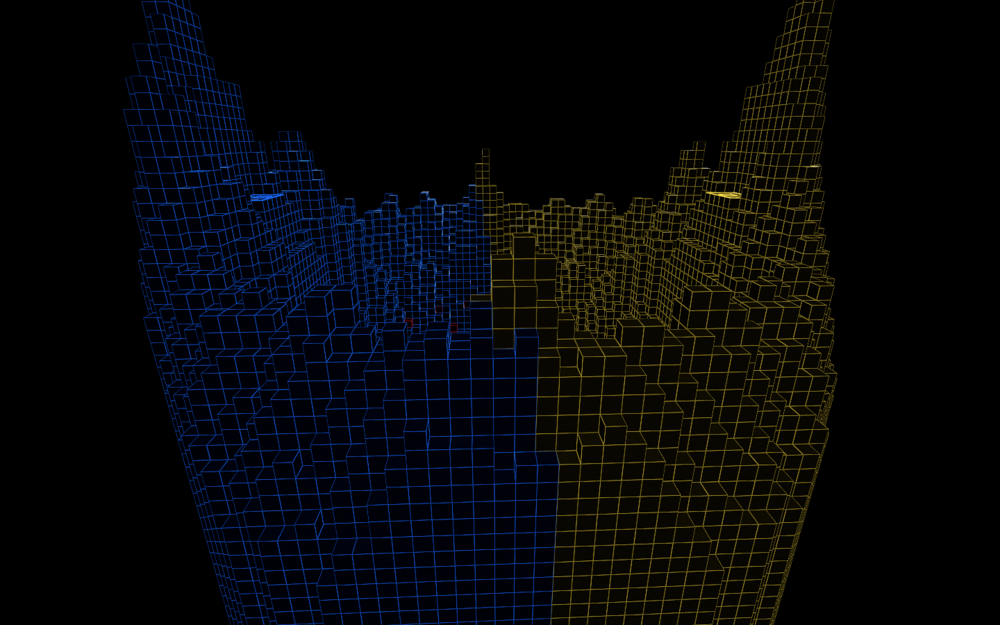
Side profile · Explore this view 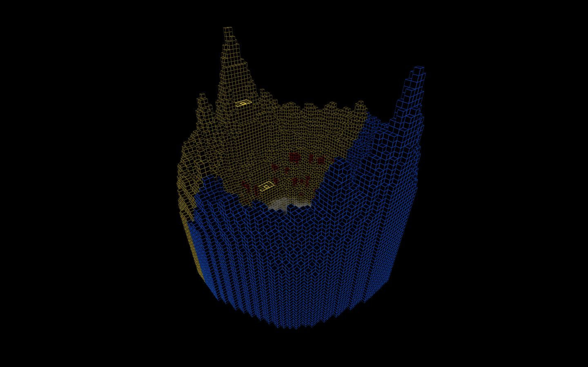
High orbit · closed mountain ring · Explore this view 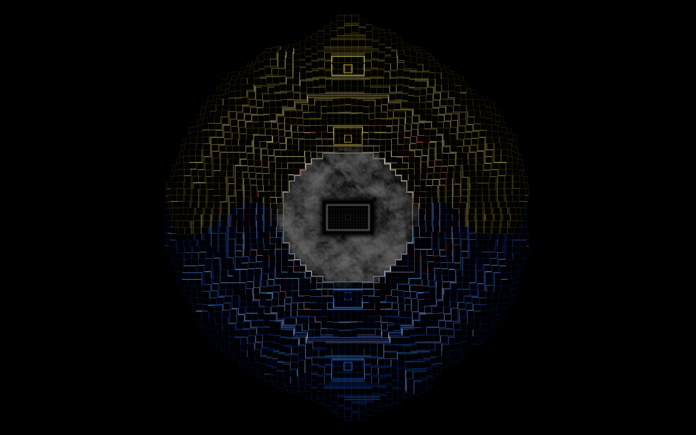
Overhead · paired arrival and play positions · Explore this view 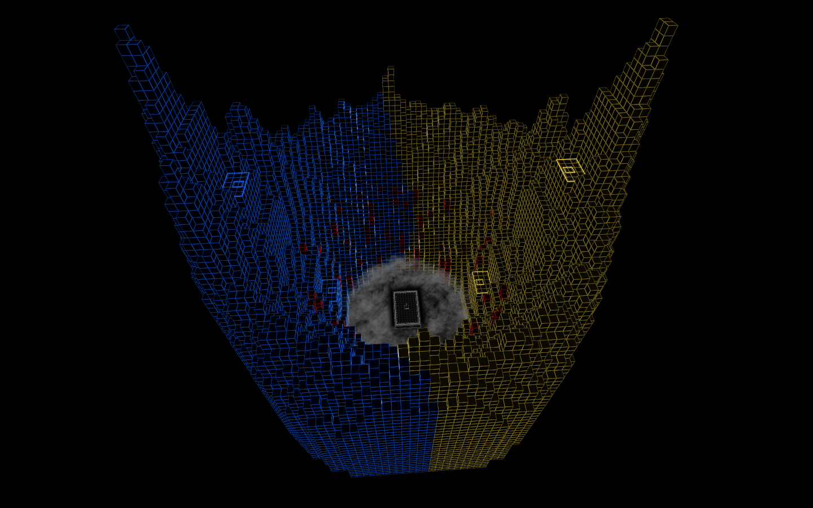
Tilted overhead · Explore this view 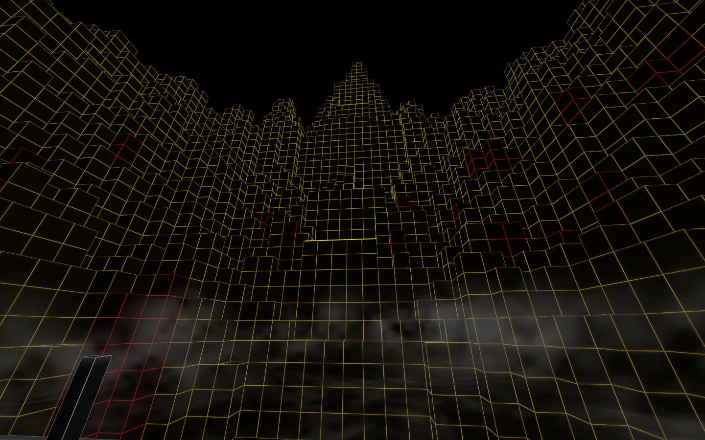
Court level · yellow mountain · Explore this view 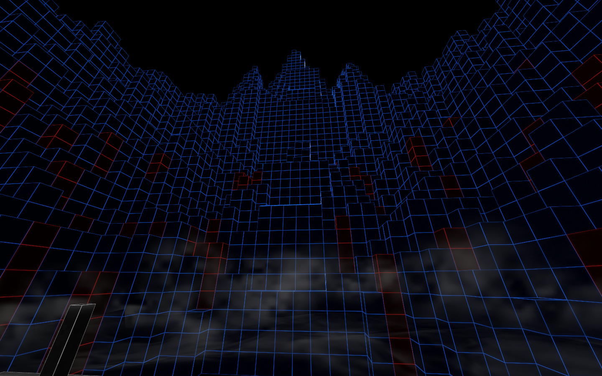
Court level · blue mountain · Explore this view Vite / TypeScript / Three.js / WebXR. Original art-direction images are preserved in ../style-stills/.